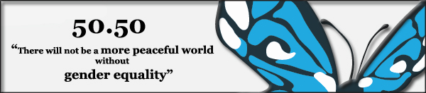

|
|
|
Browsing
Contact Us |
Campaigners |
Face to Face |
Tribune |
Interview |
News |
On the Web |
One Million |
Report
Farsi | Français | German | Italian | Spanish | العربية Also in this section
|
 A Petition We Cannot SignBy: Helen Coskeran Tuesday 26 August 2008 Open Democracy: But the One Million Signature Campaign is a far cry from these online drives for mouse clicks. It does not have the usual time limit, but the signatures it seeks are very specific: Iran’s women and men. This petition is not for Westerners but for those directly affected by the discriminatory family laws it works to change. And there is no running total on the website of the amount of signatures collected. Given the difficulty in collecting some written petitions, the organisers felt it would be unrepresentative to reveal the running total after one year. And as the campaign approaches its second birthday on 27 August, the total is still unknown, but their work goes on. There is plenty of it. Whether a woman signs the petition or not, she is given information about the implications of Iranian family law on her individual situation. To date, over 1000 campaigners have been trained in educating others and collecting their signatures. And all this is not without risk. Activist after campaigner has been arrested or imprisoned for his or her part in the fight against laws which reduce women’s rights to divorce, reduce restrictions on polygamy and divorce for men, give automatic custody to a father after divorce and even demand taxes on dowries, the one safety net for women considering divorce. And yes, you read that correctly – his or her part. Men who sympathise with and work for this cause are also being imprisoned; no one is safe. But the campaigners are not giving up. Their website is blocked by authorities; they start another. Peaceful protests are broken up using violence and arrests; they organise another two years later. These women and men are truly an inspiration. They continue to work in the face of adversity, overcoming threats and challenges and persisting in their original aim to reach a million signatures and adding new aims along the way. And we in the West cannot email our MP, we cannot sort this one out with a few mouse clicks. We can only watch in awe and voice our solidarity with these brave people who will not let legislation violate their human rights. Happy birthday, One Million, and here’s to the plenty more years of courage, education and progress. |